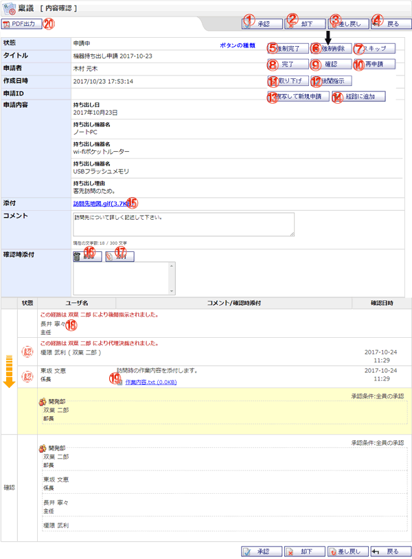

稟議の承認・否認・却下の作業や、完了した内容の確認、進行中の稟議に対する後閲指示などを行うことができる画面です。

機能説明
承認ボタンこのボタンは、以下の場合に表示されます。 |
却下ボタンこのボタンは、以下の場合に表示されます。 |
差し戻しボタン自分が承認経路に存在し、審議の順番が回ってきた場合に表示されます。クリックすると差し戻し場所選択ダイアログを表示し、指定のユーザまで稟議を差し戻します。 |
戻るボタン遷移元の画面へ遷移します。 |
強制完了ボタン管理者が申請中案件管理画面から遷移してきた場合に表示されます。審議の進行状況を無視して強制的に審議を完了します。 |
強制削除ボタン管理者が申請中案件管理画面から遷移してきた場合に表示されます。審議の進行状況を無視して強制的に稟議を削除します。 |
スキップボタン管理者が申請中案件管理画面から遷移してきて、現在審議中の承認者が承認経路の最後ではない場合に表示されます。強制的に次の経路へ審議を進行します。 |
完了ボタン申請者以外に稟議を差し戻された場合に表示されます。閲覧中の稟議の審議が完了したものとし、これ以上の審議は行わない状態にします。 |
確認ボタン自分が最終確認に存在し、経路の審議が全て承認された場合に表示されます。閲覧中の稟議を確認したものとします。 |
再申請ボタン自分が作成した稟議であり、承認経路の承認者から差し戻されてきた場合に表示されます。再び稟議を申請し、経路の初めから審議を開始します。 |
取り下げボタン自分が申請した稟議の場合に表示されます。稟議を一度完了し、その後申請者は取り下げた稟議を複写して新規作成することができます。 |
後閲指示後閲指示を出すことが可能な場合に表示されます。クリックすると後閲指示範囲選択ダイアログを表示し、指定した経路までをスキップします。 |
複写して新規申請ボタン閲覧中の稟議の内容をコピーし、新たに稟議を作成します。ただし、制限中のテンプレートは複写できません。 |
経路に追加ボタン審議の順番が回ってきた場合に、「進行中の任意経路への経路追加(経路要素：任意設定参照)」が許可された経路が、承認経路に存在する場合に表示されます。 |
添付ファイル名クリックすると添付ファイルのダウンロードができます。 |
削除ボタン添付のリストで選択中の添付ファイルを削除します。 |
添付ボタン添付ファイル選択画面をポップアップで表示します。ファイルを選択し、確定すると添付のリストに選択したファイル名が追加されます。 |
ユーザ名審議者の名前・役職が表示されます。 |
コメント/確認時添付審議者が付与したコメントおよび添付ファイルを表示します。稟議の閲覧者がこの審議者の場合は編集が可能です。 |
PDF出力稟議を単票出力をPDF形式で行います。 |
表示・入力項目説明
状態
稟議の状態が表示されます。
状態の種類には「申請中」「決裁」「却下」「草稿」「強制完了」「取り下げ」があります。
コメント
承認作業時に表示されます。コメントを入力します（300文字以内）。
確認時添付
承認作業時に表示されます。添付ファイルを指定します。
経路情報
承認経路、最終確認の役職・ユーザ名・コメント・確認時添付・確認日時・状態が表示されます。
また、単一グループを対象に指定されている場合はグループ名を、グループまたは複数ユーザが対象に選択されている場合は承認条件を表示します。
承認条件
この経路が承認として扱われ、審議が進行するための条件を指定します。
・全員の審議：全てのユーザが承認または却下を行った場合に審議を進行します。
・全員の承認：全てのユーザが承認を行った場合に審議を進行します。
・承認数：指定した数以上の承認があれば審議を進行します。
・承認割合：指定した割合以上の承認があれば審議を進行します。